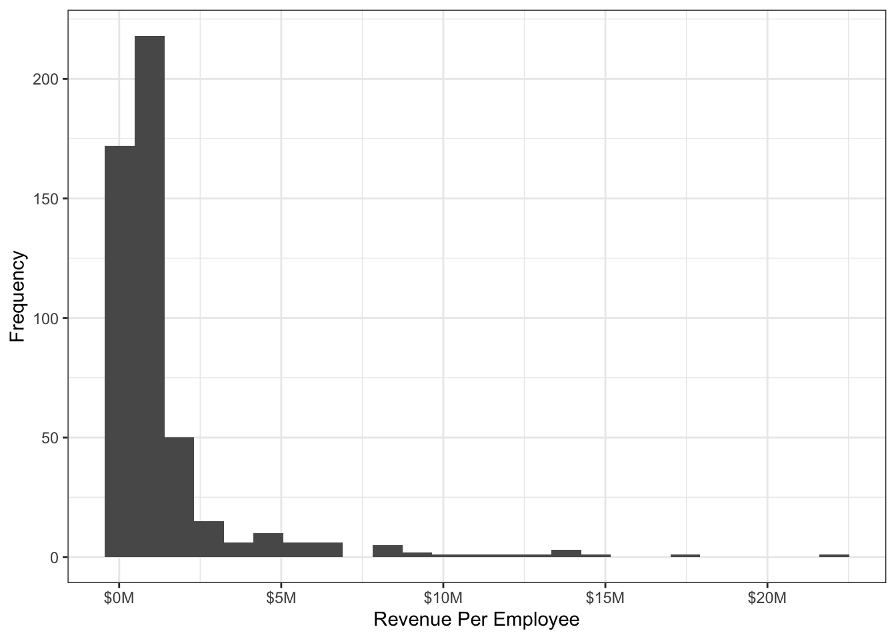

library(tidyverse)
library(scales)Nowacek_Assignment_2_B
This quarto document repeatedly uses the ‘here()’ function from the ‘here’ package to call the data. This function relies on you having downloaded the datafile “Fortune24.csv” and having it available in your current R project.
Question 1
B
Implementing renv:
# This command has been run once in this project already, just here for a record of that
# renv::init()# implementation of renv snapshot, not necessary to run every time
# renv::snapshot()# when running this file, use this command to ensure package equivalence with
# the original file building
# renv::restore()Question 2
raw24 <- read_csv(
file = here::here("Fortune24.csv"),
col_types =
list(
...1 = col_double(),
company = col_character(),
rank = col_double(),
revenues = col_double(),
profits = col_double(),
employees = col_double(),
sector = col_character(),
city = col_character(),
state = col_character(),
ceo_founder = col_character(),
ceo_woman = col_character(),
profitable = col_character(),
market_cap = col_double(),
website = col_character(),
ticker = col_character(),
assets = col_double())
)Warning: One or more parsing issues, call `problems()` on your data frame for details,
e.g.:
dat <- vroom(...)
problems(dat)Question 3
D
A fails to differentiate between character and non-character variables B uses specific variable names, not as robust, does not follow the instructions C targets the wrong variables
Question 4
fortune2024 <- read_csv(file = here::here("Fortune24.csv"), show_col_types = FALSE) |>
# 1.Parses money fields to numeric
mutate(across(where(is.character) & ends_with("s"), readr::parse_number)) |>
# 2. Coerces employees numeric;
# 3. Maps "yes" to logical FounderCEO/WomanCEO;
mutate(employees = as.numeric(employees),
ceo_founder = (ceo_founder == "yes"),
ceo_woman = (ceo_woman == "yes")) |>
# 4. Renames to Company, Sector, State, MarketCap, Revenue, Profits, Assets, Employees, FounderCEO, WomanCEO
rename(
Company = company,
Sector = sector,
State = state,
MarketCap = market_cap,
Revenue = revenues,
Profits = profits,
Assets = assets,
Employees = employees,
FounderCEO = ceo_founder,
WomanCEO = ceo_woman
) |>
# 5. Orders Sector by median Revenue (descending) using forcats.
group_by(Sector) |>
mutate(median_revenue_by_sector = median(Revenue, na.rm = TRUE)) |>
ungroup() |>
mutate(Sector = forcats::fct_reorder(Sector, median_revenue_by_sector, .desc = TRUE))Question 5
C
The median is typically the best metric for summarizing distributions with significant tails, as the median is not as sensitive to extreme values as is the mean. The trimmed mean addresses some of this issue, but does not take into account the entire dataset, sacrificing information. Standard deviation, like the mean, has weaknesses with skewed distributions including interpretability.
Question 6
fortune2024_q6 <- read_csv(file = here::here("Fortune24.csv"), show_col_types = FALSE) |>
# 1.Parses money fields to numeric
mutate(across(where(is.character) & ends_with("s"), readr::parse_number)) |>
# 2. Coerces employees numeric;
# 3. Maps "yes" to logical FounderCEO/WomanCEO;
mutate(employees = as.numeric(employees),
ceo_founder = (ceo_founder == "yes"),
ceo_woman = (ceo_woman == "yes")) |>
# 4. Renames to Company, Sector, State, MarketCap, Revenue, Profits, Assets, Employees, FounderCEO, WomanCEO
rename(
Company = company,
Sector = sector,
State = state,
MarketCap = market_cap,
Revenue = revenues,
Profits = profits,
Assets = assets,
Employees = employees,
FounderCEO = ceo_founder,
WomanCEO = ceo_woman
) |>
# 5. Orders Sector by median Revenue (descending) using forcats.
group_by(Sector) |>
mutate(median_revenue_by_sector = median(Revenue, na.rm = TRUE)) |>
ungroup() |>
mutate(Sector = forcats::fct_reorder(Sector, median_revenue_by_sector, .desc = TRUE))table_data <- fortune2024_q6 |>
group_by(Sector) |>
summarise(`Mean Revenue` = mean(Revenue, na.rm = TRUE),
`Median Revenue` = median(Revenue, na.rm = TRUE),
`Trimmed Mean Revenue` = mean(Revenue, trim = 0.1, na.rm = TRUE),
`Mean Profits` = mean(Profits, na.rm = TRUE),
`Median Profits` = median(Profits, na.rm = TRUE),
`Trimmed Mean Profits` = mean(Profits, trim = 0.1, na.rm = TRUE),
`Percentage with a Woman Ceo` = sum(WomanCEO) / n()) |>
arrange(desc(`Median Profits`))
kableExtra::kable(table_data, digits = 2)| Sector | Mean Revenue | Median Revenue | Trimmed Mean Revenue | Mean Profits | Median Profits | Trimmed Mean Profits | Percentage with a Woman Ceo |
|---|---|---|---|---|---|---|---|
| Telecommunications | 67627.24 | 54607.00 | 67627.24 | 4858.87 | 4557.00 | 4858.87 | 0.14 |
| Technology | 43363.50 | 17519.00 | 25814.00 | 8916.58 | 2237.70 | 4003.52 | 0.10 |
| Energy | 34525.04 | 16720.00 | 20303.87 | 3500.57 | 2208.10 | 2476.95 | 0.08 |
| Health Care | 68807.03 | 20548.00 | 47386.61 | 3878.10 | 2119.00 | 2660.84 | 0.12 |
| Aerospace & Defense | 42550.38 | 40781.00 | 42550.38 | 2011.62 | 1641.50 | 2011.62 | 0.25 |
| Food & Drug Stores | 89679.12 | 77649.70 | 89679.12 | 839.32 | 1513.50 | 839.32 | 0.00 |
| Business Services | 17353.22 | 16352.40 | 16997.75 | 2533.62 | 1391.40 | 2207.05 | 0.11 |
| Financials | 37439.66 | 16116.50 | 25209.84 | 4133.82 | 1386.15 | 1953.89 | 0.10 |
| Industrials | 24860.64 | 17238.50 | 23260.85 | 3560.47 | 1368.20 | 3149.28 | 0.17 |
| Hotels, Restaurants & Leisure | 16496.39 | 11325.50 | 14889.59 | 2300.41 | 1181.60 | 1718.66 | 0.10 |
| Chemicals | 16699.70 | 12574.00 | 15159.78 | 380.81 | 1029.45 | 828.13 | 0.14 |
| Engineering & Construction | 17124.97 | 15032.65 | 16262.15 | 1476.44 | 972.45 | 1302.15 | 0.08 |
| Food, Beverages & Tobacco | 25852.16 | 15207.00 | 21218.96 | 2503.21 | 951.00 | 2072.93 | 0.08 |
| Household Products | 20912.13 | 15781.10 | 20912.13 | 2182.44 | 908.00 | 2182.44 | 0.11 |
| Retailing | 54119.54 | 15094.50 | 22943.95 | 2367.74 | 797.00 | 1145.91 | 0.15 |
| Media | 29116.04 | 22749.10 | 29116.04 | 838.03 | 761.00 | 838.03 | 0.00 |
| Transportation | 27785.15 | 12829.70 | 25283.41 | 1810.01 | 728.30 | 1646.60 | 0.11 |
| Materials | 13704.36 | 12010.00 | 12750.51 | 815.75 | 723.00 | 732.65 | 0.05 |
| Apparel | 20011.88 | 10415.10 | 20011.88 | 1599.50 | 604.70 | 1599.50 | 0.00 |
| Motor Vehicles & Parts | 57153.89 | 21766.45 | 48109.11 | 3548.06 | 598.75 | 2646.57 | 0.10 |
| Wholesalers | 25492.68 | 19438.70 | 23453.74 | 710.91 | 581.60 | 683.96 | 0.06 |
Question 7
B
The stratified bootstrap is by far the best approach of these four, C and D are simply not appropriate tests, while A is not as direct a comparison as B.
Question 8
fortune2024_q8 <- read_csv(file = here::here("Fortune24.csv"), show_col_types = FALSE) |>
# 1.Parses money fields to numeric
mutate(across(where(is.character) & ends_with("s"), readr::parse_number)) |>
# 2. Coerces employees numeric;
# 3. Maps "yes" to logical FounderCEO/WomanCEO;
mutate(employees = as.numeric(employees),
ceo_founder = (ceo_founder == "yes"),
ceo_woman = (ceo_woman == "yes")) |>
# 4. Renames to Company, Sector, State, MarketCap, Revenue, Profits, Assets, Employees, FounderCEO, WomanCEO
rename(
Company = company,
Sector = sector,
State = state,
MarketCap = market_cap,
Revenue = revenues,
Profits = profits,
Assets = assets,
Employees = employees,
FounderCEO = ceo_founder,
WomanCEO = ceo_woman
) |>
# 5. Orders Sector by median Revenue (descending) using forcats.
group_by(Sector) |>
mutate(median_revenue_by_sector = median(Revenue)) |>
ungroup() |>
mutate(Sector = forcats::fct_reorder(Sector, median_revenue_by_sector, .desc = TRUE)) |>
# add RevenueEmployee variable
mutate(RevenueEmployee = Revenue/Employees) |>
drop_na(RevenueEmployee, WomanCEO, Sector)set.seed(1) # for reproducibility
NRepeat <- 2000 # no. of bootstrapped samples
bootRes <- matrix(data = NA, nrow = NRepeat, ncol = 1)
# Loop across all samples
for (i in seq(NRepeat))
{
# Stratified resample by sector
bootData <- fortune2024_q8 |>
group_by(Sector) |>
slice_sample(prop = 1, replace = TRUE) |>
ungroup()
# Compute difference in mean RevenueEmployee (WomanCEO TRUE minus FALSE)
mean_stats <- bootData |>
group_by(WomanCEO) |>
summarise(mean = mean(RevenueEmployee, na.rm = TRUE)) |>
ungroup()
mean_true <- mean_stats$mean[mean_stats$WomanCEO == TRUE]
mean_false <- mean_stats$mean[mean_stats$WomanCEO == FALSE]
diff_mean <- mean_true - mean_false
bootRes[i, 1] <- diff_mean
}
# 95% bootstrap CI
# quantile(bootRes[, 1], probs = c(0.025, 0.975), na.rm = TRUE)
# this last line is commented since the question says "show code only"Question 9
# fortune2024_q9 <- read_csv(file = here::here("Fortune24.csv"), show_col_types = FALSE) |>
#
# # 1.Parses money fields to numeric
# mutate(across(where(is.character) & ends_with("s"), readr::parse_number)) |>
#
# # 2. Coerces employees numeric;
# # 3. Maps "yes" to logical FounderCEO/WomanCEO;
# mutate(employees = as.numeric(employees),
# ceo_founder = ifelse(ceo_founder == "yes", 1, 0),
# ceo_woman = ifelse(ceo_woman == "yes", 1, 0)) |>
#
# # 4. Renames to Company, Sector, State, MarketCap, Revenue, Profits, Assets, Employees, FounderCEO, WomanCEO
# rename(
# Company = company,
# Sector = sector,
# State = state,
# MarketCap = market_cap,
# Revenue = revenues,
# Profits = profits,
# Assets = assets,
# Employees = employees,
# FounderCEO = ceo_founder,
# WomanCEO = ceo_woman
# ) |>
#
# # 5. Orders Sector by median Revenue (descending) using forcats.
# group_by(Sector) |>
# mutate(median_revenue_by_sector = median(Revenue)) |>
# ungroup() |>
# mutate(Sector = forcats::fct_reorder(Sector, median_revenue_by_sector, .desc = TRUE))# fortune2024_q9 |>
# ggplot(aes(x = Revenue, y = Profits)) +
# geom_point() +
# geom_smooth(method = "lm")
# scale_x_log10()I coded this plot to help answer the question.
B
Just changing the scale in the plot does not make a new variable or change the existing one, to run tests on the log transformed data you would have to make a new variable.
Question 10
fortune2024_q10 <- read_csv(file = here::here("Fortune24.csv"), show_col_types = FALSE) |>
# 1.Parses money fields to numeric
mutate(across(where(is.character) & ends_with("s"), readr::parse_number)) |>
# 2. Coerces employees numeric;
# 3. Maps "yes" to logical FounderCEO/WomanCEO;
mutate(employees = as.numeric(employees),
ceo_founder = (ceo_founder == "yes"),
ceo_woman = (ceo_woman == "yes")) |>
# 4. Renames to Company, Sector, State, MarketCap, Revenue, Profits, Assets, Employees, FounderCEO, WomanCEO
rename(
Company = company,
Sector = sector,
State = state,
MarketCap = market_cap,
Revenue = revenues,
Profits = profits,
Assets = assets,
Employees = employees,
FounderCEO = ceo_founder,
WomanCEO = ceo_woman
) |>
# 5. Orders Sector by median Revenue (descending) using forcats.
group_by(Sector) |>
mutate(median_revenue_by_sector = median(Revenue, na.rm = TRUE)) |>
ungroup() |>
mutate(Sector = forcats::fct_reorder(Sector, median_revenue_by_sector, .desc = TRUE)) |>
# add RevenueEmployee for plotting in SI units
mutate(
RevenueEmployee = ifelse(is.na(Employees) | Employees == 0,
NA_real_,
Revenue / Employees))fortune2024_q10 |>
ggplot(aes(x = RevenueEmployee)) +
geom_histogram(bins = 25) +
theme_bw() +
scale_x_continuous(labels = label_number(scale_cut = cut_short_scale(),
prefix = "$", suffix = "M")) +
labs(x = "Revenue Per Employee", y = "Frequency") 
EOF